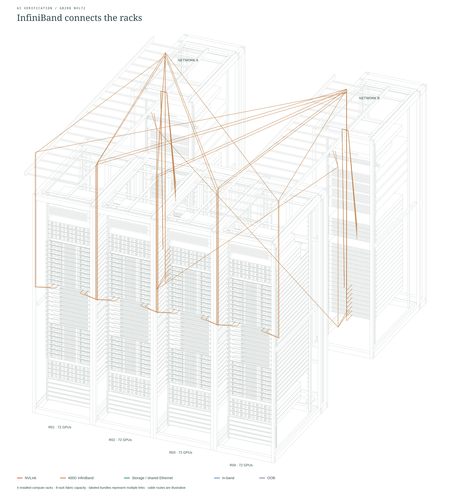
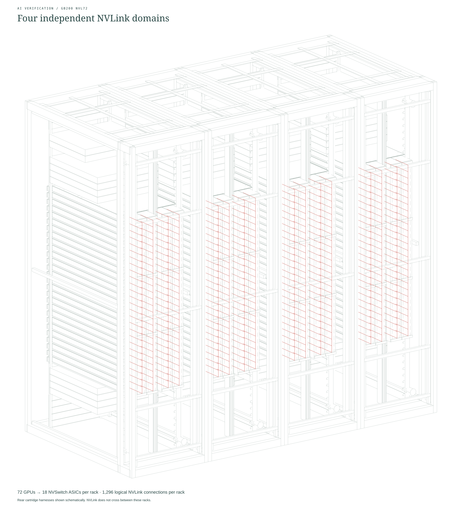

02 / Compute fabric
Scale out through InfiniBand.

Vector SVGTransparent PNGFour compute racks, with the complete fabric provisioned for an eight-rack scalable unit. Switch between presentation bundles and individual connections.
Four installed compute racks; eight-rack fabric capacity. Sixteen IB leaves serve the installed racks, with sixteen reserved for expansion. The nine shared spines and all leaf-to-spine links follow NVIDIA’s single-SU Figure 9. Storage, control-plane, customer-edge and BMS connections terminate at labeled external boundaries. Rack placement, cable paths and small mechanical details are illustrative.

Vector SVGTransparent PNG
Vector SVGTransparent PNG